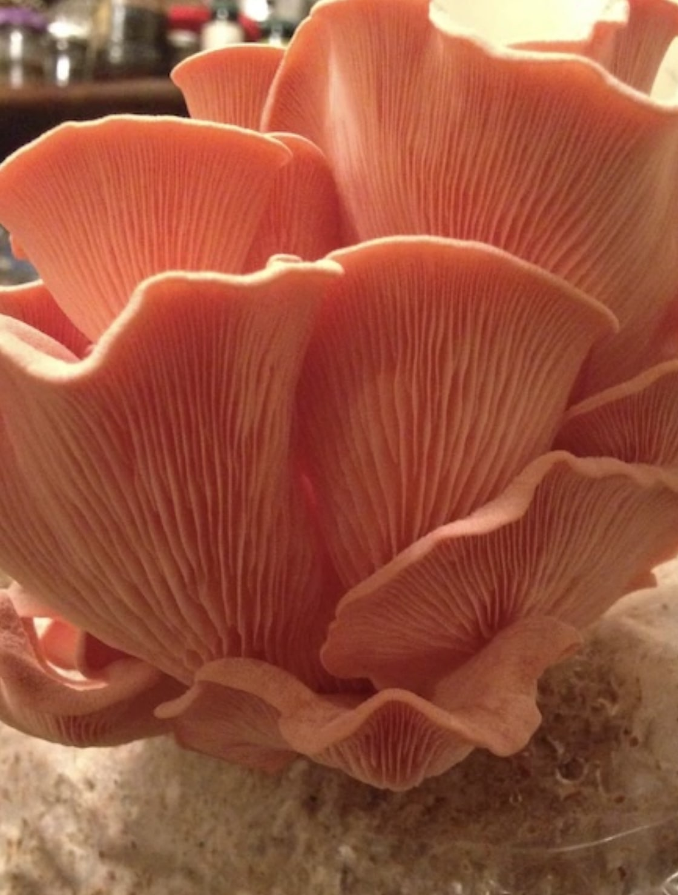
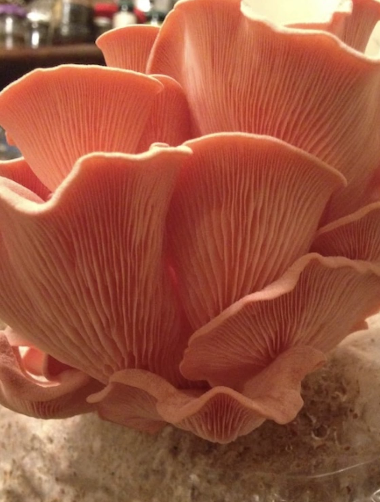

Mushrooms
For several years, I dedicated myself to cultivating a wide variety of mushrooms. My collection included cordyceps, reishi, lion's mane, chestnut, blue oyster, and pink oyster mushrooms. Typically, I started with spores, inoculating them into grain mediums or agar agar, or using hardwood pellets mixed with wheat bran. I managed the growing environment using a tent equipped with temperature and humidity controllers. For the cordyceps, I used a separate setup involving small jars kept in a mini-fridge connected to a temperature controller. I also employed liquid culture mediums for simpler inoculation and cloned the largest specimens. My harvests were not just for observation; I prepared dual alcohol extracts, brewed teas, and cooked them into various dishes.

 
